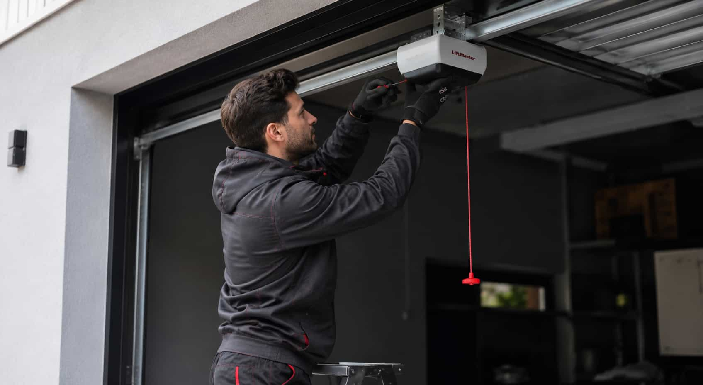

Motor and drive type
Compare belt-drive, chain-drive, screw-drive, direct-drive, and wall-mount opener options.

GARVOX helps homeowners review local provider options for opener-related garage door projects, including motor type, smart controls, sensors, quiet operation, compatibility, and warranty questions.
A garage door opener project can involve motor strength, belt-drive or chain-drive systems, wall-mount options, safety sensors, remotes, smart controls, rail setup, wiring, and door compatibility. GARVOX helps homeowners compare provider options before contacting companies directly.
Start a RequestCompare belt-drive, chain-drive, screw-drive, direct-drive, and wall-mount opener options.
Ask about remotes, wall controls, keypads, safety sensors, wiring, and smart features.
Confirm opener fit with door weight, balance, track setup, hardware, and usage level.
Opener-related quotes can vary depending on the existing door, motor type, smart controls, sensors, hardware, provider availability, and warranty terms.
Ask whether belt-drive, chain-drive, wall-mount, or another opener type fits the door system.
Confirm what motor strength may be appropriate for the existing door size, weight, and usage.
Compare app controls, Wi-Fi features, remotes, keypads, wall buttons, and setup details.
Ask how opener type, roller condition, track condition, and door balance may affect noise.
Verify sensor setup, alignment, wiring, replacement scope, and quote details directly.
Review warranty terms for opener hardware, controls, sensors, labor, and provider scope.
Different opener systems may involve different motors, rails, mounting needs, sensor setup, remotes, smart controls, and warranty considerations.
Belt-drive openers are often compared for quieter operation. Ask providers about door balance, roller condition, motor strength, smart controls, and warranty details.

Chain-drive openers are often compared for durability and value. Ask providers about noise, maintenance, door weight, hardware compatibility, and installation scope.

Wall-mount opener projects may depend on ceiling space, shaft compatibility, door balance, electrical setup, and provider experience with this opener type.
Smart opener projects can involve app setup, Wi-Fi signal, keypad options, remotes, wall controls, compatibility, and homeowner account setup details.

Sensor-related opener work may involve alignment, wiring, replacement parts, brackets, door movement, and safety checks. Verify the full scope directly with providers.
A quiet attached garage, a heavy door, or a smart-control request can lead to different provider questions.
Ask about belt-drive systems, roller condition, vibration, door balance, and noise control.
Compare motor strength, door weight, rail setup, durability, and warranty coverage.
Review Wi-Fi features, app controls, keypad setup, remote options, and compatibility.
Confirm whether track condition, springs, balance, sensors, and hardware affect opener fit.
These answers keep the GARVOX provider-matching model clear and help homeowners verify opener details directly.